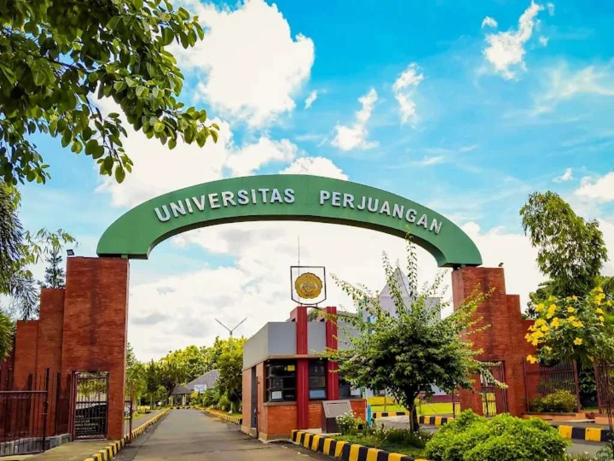

Kampus perjuangan · Tasikmalaya
Ilmu yang bertumbuh.
Karakter yang teguh.
Universitas Perjuangan Tasikmalaya merupakan ruang untuk belajar, mengembangkan pengetahuan, membangun karakter, dan memberi kontribusi bagi masyarakat.
Berakar di tanah Sunda, berkarya untuk bangsa.

GERBANG KAMPUSUniversitas Perjuangan TasikmalayaKota Tasikmalaya · Jawa Barat
01 / UNPER
Sekilas UNPERBerakar di Tasikmalaya,
Berakar di Tasikmalaya,
berkarya untuk bangsa.
Kenali lebih dekat
Tentang UNPER
Temukan informasi kampus
Jelajahi informasi penting tentang identitas, bidang keilmuan, dan arah pengembangan universitas.
01 / PROFIL
Profil Universitas
Sejarah singkat, identitas, dan gambaran umum Universitas Perjuangan Tasikmalaya.
Baca selengkapnya ↗ 02 / AKADEMIKFakultas
Kenali lima fakultas yang menaungi bidang keilmuan dan program pendidikan.
Jelajahi fakultas ↗ 03 / ARAHVisi dan Misi
Pelajari arah pengembangan, komitmen, dan tujuan institusi.
Lihat visi & misi ↗KENALI LINGKUNGAN KAMPUS
Kampus di Kota Tasikmalaya
Tempat bertumbuh, belajar, dan berkontribusi.
Kenali Universitas Perjuangan Tasikmalaya melalui informasi profil, fakultas, program studi, layanan, dan kegiatan kemahasiswaan yang tersedia di website ini.
Nilai kejuanganCageur, Bageur, Bener,
Cageur, Bageur, Bener,
Pinter, tur Singer.
Nilai kearifan lokal Sunda yang menjadi pengingat untuk menjaga kesehatan, berperilaku baik, menjunjung integritas, mengembangkan kecerdasan, dan tanggap dalam berkarya.
Kenali identitas UNPERAkses cepat
Semua layanan Layanan kampus, lebih dekat.
Pintasan menuju layanan akademik, penerimaan mahasiswa baru, dan publikasi ilmiah.
Ada yang ingin ditanyakan?
Hubungi UNPER Hubungi Universitas Perjuangan Tasikmalaya.
Temukan informasi kontak dan sampaikan pertanyaan melalui halaman Hubungi Kami.